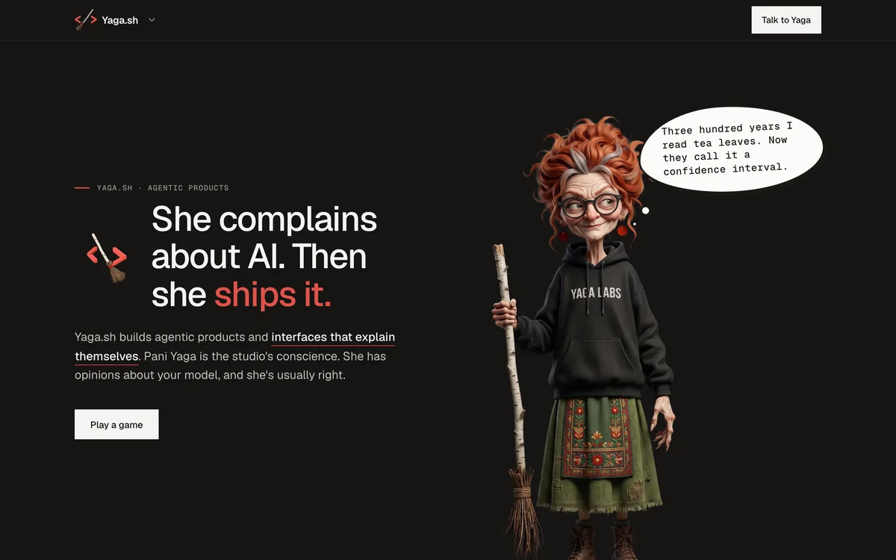

Platform
Yaga.sh
My experimentation platform. Where I experiment and build things.
- Agents, small AI tools and black boxes you can argue with.
- Miss Yaga is its conscience. She has opinions about your model.
